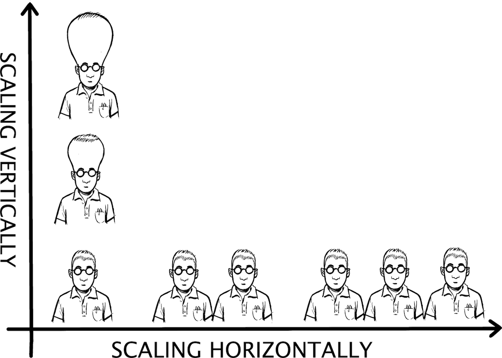

How to Scale an Organization? The Same Way You Scale a System!

The digital world is all about scalability: millions of websites, billions of hits per month, petabytes of data, more tweets, more images uploaded. To make this work, architects have learned a ton about scaling systems: make services stateless and horizontally scalable, minimize synchronization points to maximize throughput, keep transaction scope local, avoid synchronous remote communication, use clever caching strategies, and shorten your variable names (just kidding!).
With everything around us scaling to never-before-seen throughput, the limiting element in all of this is bound to be us, the human users, and the organizations we work in. You might wonder, then, whether IT architects, who know so much about scalability, can apply their expertise to scaling and optimizing throughput in organizations. I might have become an architect astronaut1 suffering from oxygen deprivation due to exceedingly high levels of abstraction, but I can’t help but feel that many of the scalability and performance approaches known to experienced IT architects can just as well be applied to scaling organizations. If a coffee shop (Chapter 17) can teach us about maximizing a system’s throughput, maybe our knowledge of IT systems design can help improve an organization’s performance?
Increasing throughput starts with the individual. Some folks are simply 10 times more productive than others. For me it’s hit or miss: when I am “in the zone,” I can be incredibly productive but lose traction just as quickly when I am being frequently interrupted or annoyed by something. So, I won’t bestow on you any great personal advice, but instead refer you to the many resources like GTD (Getting Things Done),2 which advises you to minimize your inventory of open tasks (making the Lean folks happy) and to break down large tasks into smaller ones that are immediately actionable. For example, “I really ought to replace that old clunker” turns into “visit three dealerships this weekend.” Incoming stuff is categorized and either immediately processed or parked until it’s actionable, thus reducing the number of concurrent threads. The suggestions are very sound, but as always it takes a bit of trust and lots of discipline to succeed at implementing them.
Let’s assume people individually do their best to be productive and have high throughput, meaning we have efficient and effective system components. Now we need to look at the integration architecture, which defines the interaction between components; in other words, people. One of the most common interaction points (short of email, more on that later) surely is the meeting. The name alone gives some of us goose bumps because it suggests that people get together to “meet” one another, but doesn’t define any specific agenda, objective, or outcome.
Meetings are synchronization points—a well-known throughput killer.
From a systems design perspective, meetings have another troublesome property: they require multiple humans to be (mostly) in the same place at the same time. In software architecture, we call this a synchronization point, widely known as one of the biggest throughput killers. The word “synchronous” derives from Greek and essentially means things happening at the same time. In distributed systems for things to happen at the same time, some components must wait for others, which is quite obviously not the way to maximize throughput.
The longer the wait for the synchronization point, the more dramatic the negative impact on performance becomes. In some organizations finding a meeting time slot among senior people can take a month or longer. Such resource contention on people’s time significantly slows down decision making and project progress (and hurts economies of speed; see Chapter 35). The effect is analog to locking database updates: if many processes are trying to update the same table record, throughput suffers enormously as most processes just wait for others to complete, eventually ending up in the dreaded deadlock. Administrative teams in large organizations acting as transaction monitor underlines the overhead caused by using meetings as the primary interaction model. Worse yet, full schedules cause people to start blocking time “just in case,” a form of pessimistic resource allocation, which has exactly the opposite of the intended effect on the system behavior (Chapter 10).
Getting together can be useful for brainstorming, critical discussions, or decisions, but the worst kind of meetings must be status meetings. If someone wants to know where a project stands, why would they want to wait for the next status meeting that takes place in a week or two? To top it off, many status meetings I attended had someone read text off a document that wasn’t distributed ahead of the meeting lest someone read through it and escape the meeting.
When you can’t wait for the next meeting, you tend to call the person. I know well as I log half a dozen incoming calls a day, which I routinely don’t answer (they typically lead to an email starting with the phrase “I was unable to reach you by phone,” whose purpose I never quite understood). Phone calls have short wait times when compared to meetings, but are still synchronous and thus require all resources to be available at the same time. How many times have you played “phone tag” where you were unable to answer a call just to experience the reverse when you call back? I am not sure there’s an analog to this in system communication (I should know; after all, I am documenting conversation patterns),3 but it’s difficult to imagine this as effective communication.
Phone calls are “interrupts” (they are blockable by muting your ringer), and in an open environment, they not only interrupt you but also your coworkers. That’s one reason that Google Japan’s engineering desks were by default not equipped with phones—you had to specifically request one, which was looked upon as a little old fashioned. The damage ringing phones can do in open office spaces was already illustrated in Tom DeMarco and Tim Lister’s classic Peopleware.4 The “tissue trick” won’t work anymore with digital phones, but luckily virtually all of them have a volume setting. My pet peeve related to phones is people busting into my office while I am talking on the speaker phone, so I’d like to build a mini project to illuminate an “on air” sign while I am on the phone.
Retrying an unsuccessful operation is a typical conversation pattern. It’s also a dangerous operation because it can escalate a small disturbance in a system into an onslaught of retries, which brings everything to a grinding halt. That’s why _Exponential Backoff5 is a well-known pattern and forms the basis of many low-level networking protocols, such as Carrier Sense, Multiple Access with Collision Detection (CSMA/CD), which is a core element of the Ethernet protocol.
Ironically, humans tend to not back off if a phone call fails, but have a tendency to pile on: if you don’t pick up, they tend to call you at ever shorter intervals to signal that it’s urgent. Ultimately, they will back off, but only after burdening the system with overly aggressive retries. Such behavior contributes to uneven resource utilization. It seems that either everyone seems to be calling you or it’s extremely quiet. Asynchronous communication with queues in contrast can perform traffic shaping—spikes are absorbed by the queue, allowing the “service” to process requests at the optimal rate without becoming overloaded. That’s why I prefer to receive an email starting with “I was unable to reach you by phone”: I converted a synchronous operation into an asynchronous one.
In corporate environments, email tends to draw almost as much ire as meetings. It has one big advantage, though: it’s asynchronous. Instead of being interrupted, you can process your email whenever you have a few minutes to spare. Getting a response might take slightly longer, but it’s a classic “throughput over latency” architecture, best described by Clemens Vaster’s analogy of building wider bridges, not faster cars, to solve the perennial congestion on the two-lane floating bridge that’s part of Washington State Route 520 between Seattle and Redmond.
Email also has drawbacks, the main one being people flooding everyone’s inbox because the perceived cost of sending mail is zero. Unfortunately, the cost of reading an email isn’t. You must therefore have a good inbox filter if you want to survive. Also, mail isn’t collectively searchable—each person has their own record of history. I guess you could call that an eventually consistent architecture of sorts and just live with it, but it still seems horribly inefficient. I wonder how many copies of that same 10 MB PowerPoint presentation plus all its prior versions are stored on a typical Exchange server.
Integrating chat with email can overcome some of these limitations: if you don’t get a reply or the reply indicates that a real-time discussion is needed, the “reply by chat” button turns the conversation into quasi-synchronous mode: it still allows the receiver to answer at will (so it’s asynchronous) but allows for much quicker iterations than mail. Products like Slack, which favor a chat/channel paradigm, also enable asynchronous communication without email. Systems architects would liken this approach to tuple spaces, which, based on a blackboard architectural style, are well suited for scalable, distributed systems thanks to loose coupling and avoiding duplication.
Much of corporate communication consists of asking questions, often via synchronous communication. This doesn’t scale because the same questions are asked again and again. Architects would surely introduce a cache into their system to offload the source component, especially when they receive repeated requests for basic information, such as a photo of a new team member. In such cases, I simply type the person’s name into Google and reply with a hyperlink to an online picture, asking Google instead of another person.
Search scales, but only if the answers are available in a searchable medium. Therefore, if you receive a question, reply so that everyone can see (and search) the answer; for example, on an internal forum—that’s how you load the cache. Taking the time to explain something in a short document or forum post scales: 1,000 people can search for and read what you have to share. 1,000 one-on-one meetings to explain the same story would take half of your annual work time.
One cache killer that I have experienced is the use of different templates, which aim for efficiency but hurt data reuse. For example, when I answer requests for my resume with a link to my home page or LinkedIn, I observe a human transcribing the data found online into a prescribed Word template. Some things are majorly wrong in the digital universe.
Even though some communication styles might scale better than others, all will ultimately collapse under heavy traffic because humans can handle only so much throughput, even in chat or asynchronous communication. The goal therefore mustn’t only be to tune communication but also to reduce it. Large corporations suffer from a lot of unnecessary communication, caused, for example, by the need “to align.” I often jest that “aligning” is what I do when my car doesn’t run straight or wears the tires unevenly. Why I need to do it at work all the time puzzled me, especially as “alignment” invariably triggers a meeting with no clear objective.
In corp speak, to align means to coordinate on an issue and come to some sort of common understanding or agreement. A common understanding is an integral part of productive teamwork, but the act of “aligning” can start to take on a life of its own. My suspicion is that it’s a sign of misalignment (pun intended) between the project and organizational structures: the people who are critical to a project’s success or are vital decision makers aren’t part of the project, requiring frequent “steering” and “alignment” meetings. The system design analog for this problem is setting domain boundaries poorly, drawing on Eric Evans’s Domain-Driven Design6 concept of a Bounded Context.7 Slicing a distributed system across poorly set domain boundaries is almost guaranteed to increase latency and burden both the system and its developers, who must grapple with increased complexity. Sam Newman would surely agree.8
Self-service generally has poor connotations: if the price were the same, would you rather eat at McDonald’s or in a white-tablecloth restaurant with waiter service? If you are a food chain looking to optimize throughput, though, would you rather be McDonald’s or the quaint Italian place with five tables? Self-service scales.
Requesting a service or ordering a product by making a phone call or emailing spreadsheet attachments for someone to manually enter data doesn’t scale, even if you lower the labor cost with near- or offshoring. To scale, automate everything (Chapter 13): make all functions and processes available online on the intranet, ideally both as web interfaces and as (access protected) service APIs so that users can layer new services or custom user interfaces on top; for example, to combine popular functions.
Does scaling organizations like computer systems mean that the digital world shuns personal interaction, turning us into faceless email and workflow drones that must maximize throughput? I don’t think so. I very much value personal interaction for brainstorming, negotiation, solution finding, bonding, or just having a good time. That’s what we should maximize face-to-face time for. Having someone read slides aloud or calling me the third time to ask the same question could be achieved many times faster by optimizing communication patterns. Am I being impatient? Possibly, but in a world in which everything moves faster and faster, patience might not be the best strategy. High-throughput systems don’t reward patience.
1 Joel Spolsky, “Don’t Let Architecture Astronauts Scare You,” April 21, 2001, Joel on Software (blog), https://oreil.ly/MafCn.
2 Wikipedia, "Getting Things Done,” https://oreil.ly/PRfdu.
3 Hohpe, “Conversation Patterns,” Enterprise Integration Patterns, https://oreil.ly/qHzFw.
4 Tom DeMarco and Timothy Lister, Peopleware: Productive Projects and Teams, 3rd ed. (Upper Saddle River, NJ: Addison-Wesley, 2013).
5 Wikipedia, “Exponential Backoff,” https://oreil.ly/A4QbL.
6 Eric Evans, “About Domain Language,” Domain Language (website), https://oreil.ly/m71x1.
7 Martin Fowler, “Bounded Context,” MartinFowler.com, https://oreil.ly/AtY88.
8 Sam Newman, Building Microservices: Designing Fine-Grained Systems (O’Reilly, 2015).